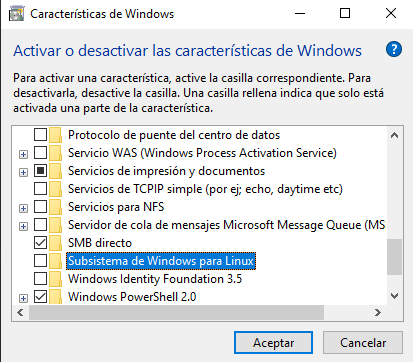
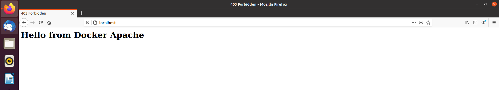

Despliegue de Servidores Web Apache, Nginx y Caddy
¿Que es Docker?
Docker es uno de los proyectos más conocidos y utilizados en temas de virtualización.
Lejos de ser un sistema operativo como tal, esta plataforma de código abierto hace uso de las funciones de aislamiento de recursos del kernel
de Linux para poder dar lugar a contenedores independientes, dentro de los cuales se ejecutará una única aplicación con sus respectivas dependencias,
pero funcionando siempre con un único kernel, el de la máquina real, en lugar de virtualizar uno por cada contenedor o máquina virtual.

¿Y que es un contenedor? Esto es un concepto antiguo de Linux y este nombre es debido a como docker funciona, y utiliza
el kernel de Linux para poder aislar las aplicaciones para que se ejecuten de manera independiente. Un contenedor de Docker
contiene los archivos necesarios e imprescindibles para que esa aplicacion funcione correctamente, por eso son ligeros y portables.
¿Como funciona?
Docker usa el kernel de Linux y algunas funciones de este, como los Cgroups y los namespaces, para segregar los procesos,
de modo que puedan ejecutarse de manera independiente. El propósito de los contenedores es esta independencia:
la capacidad de ejecutar varios procesos y aplicaciones por separado para hacer un mejor uso de su infraestructura y, al
mismo tiempo, conservar la seguridad que tendría con sistemas separados.

Docker ofrece un modelo de implementación basado en imágenes. Esto permite compartir una aplicación, o un conjunto de servicios,
con todas sus dependencias en varios entornos. Docker también automatiza la implementación de la aplicación en este entorno de contenedores
¿Diferencias con respecto a una maquina virtual?
La principal diferencia con respecto a las maquinas virtuales es que Docker realiza una virtualización a nivel
de sistema operativo, no virtualiza un sistema operativo por completo. Mientras que en las maquinas virtuales necesitas contar
con un sistema operativo completo virtualizado(ocupando por ejemplo 1gb de memoria RAM), Docker aprovecha el kernel de la maquina
anfitriona y, con su motor, tan solo carga en la memoria las librerias y dependencias necesarias para ejecutar esa aplicacion, ocupando así
mucho menos espacio, alrededor de un 80% menos.
Las principales ventajas de Docker son las siguientes:
- Portabilidad: todos los contenedores de docker son portables, por lo que podemos llevarlos facilmente a cualquier otro equipo con Docker sin tener que volver a configurar nada
- Ligereza: al no virtualizar un sistema operativo completo, sino solo lo necesario, el consumo de recursos es mínimo.
- Autosuficiencia: docker practicamente se encarga de todo, gracias al Docker Engine, servicio el cual se encarga de dar a los contenedores los recursos necesarios para que estos funcionen, es decir, si contenedor recibe una carga de trabajo mayor, Docker automaticamente le asigna mas recursos físicos para que este pueda seguir operando, por lo que los contenedores tan solo deben tener lo necesario para que la aplicación funcione, como librerías y configuraciones para poder desempeñar su función.
Instalación
Windows
Para la instalación de docker en Windows es necesario habilitar el subsistema de windows para linux, existen dos maneras de hacerlo, la primera: es irse al apartado de Activar y Desactivar características de Windows, al cual se puede acceder mediante la busqueda en la parte inferior izquierda o pulsando las teclas CRTL + R y escribiendo control panel y dentro del Panel de control > Programas y características > Activar o Desactivar características de Windows una vez dentro de activar o desactivar características de windows se busca Subsistema de Windows para Linux.
Despues de instalar el Subsistema de Windows para Linux, hay que descargarse Docker Desktop que es una herramienta visual para el manejo de contenedores, una vez instalado eso se podrá hacer uso de todos los comandos de Docker.
Linux(Ubuntu)
Para instalar Docker en Ubuntu hay que irse al terminal y ejecutar los siguientes comandos:$ sudo apt-get update $ sudo apt-get install apt-transport-https ca-certificates curl gnupg-agent software-properties-common $ curl -fsSL https://download.docker.com/linux/ubuntu/gpg | sudo apt-key add - $ sudo apt-key fingerprint 0EBFCD88 $ sudo add-apt-repository "deb [arch=amd64] https://download.docker.com/linux/ubuntu $(lsb_release -cs) stable" $ sudo apt-get update $ sudo apt-get install docker-ce docker-ce-cli containerd.io
Despliegue de Apache con Docker
El despliegue de un contenedor apache con Docker capaz de interpretar PHP se puede realizar con un solo comando, lo único necesario es crear un archivo php que pueda interpretar,
así que lo primero que hay que hacer es crear el fichero PHP y ubicarlo dentro de una carpeta:
$ sudo mkdir apache-php && sudo vi index.phpUna vez creada la carpeta con el fichero PHP dentro de la carpeta, hay que descargarse la imagen que contiene PHP y Apache con el siguiente comando:
$ sudo docker pull php:7.2-apacheDescargada la imagen, para lanzar el contenedor con Apache se hace con el siguiente comando:
$ sudo docker run -d -p 80:80 -v ${pwd}/{nombreCarpetaphp}/:/var/www/html --name web-apache php:7.2-apache
El comando docker run mas sus argumentos hacen los siguientes:
- Docker Run: es el comando utilizado para el despliegue de contenedores a partir de una imagen.
- -d: es una manera de lanzar el contenedor, en este caso es detached en segundo plano.
- -p: es la manera de decirle a Docker los puertos a asignar, los puertos delante de los dos puntos pertenecen a la maquina anfitriona, y los que están despues a los del contenedor, es decir, si queremos desplegar el mismo servidor apache varias veces solo tendríamos que cambiar el 80 que está justo delante de los dos puntos.
- -v: esto corresponde a los volumenes de docker, los cuales son como carpetas o espacios compartidos entre la maquina anfitriona y el contenedor, y al igual que con los puertos la ruta que está justo delante de los dos puntos pertenece a la maquina anfitriona y la que está detrás al contenedor.
- --name: esto se utiliza para asinarle un nombre al contenedor que se lanza, ya que por defecto Docker le asigna a todos los contenedores un ID único y tú le puedes asignar un nombre para ejecutar comandos sobre él(este nombre será unico para el contenedor no se puede repetir).
- php:7.2-apache: es el nombre de la imagen que se va utilizar para desplegar el contenedor.
Consejo/Nota
Con Docker es recomendable trabajar con rutas absolutas, y no es lo mismo poner: /directorio/directorio1 que /directorio/directorio1/, con /directorio/directorio1 estamos diciendo a Docker que copia el directorio completo junto a sus contenidos y con /directorio/directorio1/ le estamos diciendo a Docker que copie los contenidos de ese directorio.
Video de configuración de Apache con Docker
El resultado de esta serie de pasos es el siguiente:
Despliege de Nginx con Docker
Para configurar nginx con docker esta vez es necesario tener levantado un contenedor aparte con PHP FastCGI,
que es un protocolo que se utiliza para interconectar programas interactivos con servidores web y un segundo contenedor
con Nginx:
Para desplegar el contenedor php-fpm es necesario primero hacer un pull de la imagen:
$ sudo docker pull php:7.2-fpm-alpine
Una vez hecho el pull de la imagen es necesario crear el archivo/s que queremos mostrar en una carpeta para compartirla con el contenedor, y ejecutar el comando docker run:
$ sudo docker run --name php-fpm -v $PWD/{carpetaContenedoraPHP}/:/var/www/html php:7.2-fpm-alpine
Una vez levantado el contenedor con PHP con FastCGI hay que preparar la configuración para el contenedor de nginx y have un pull de su imagen, la configuración de host necesaria es la siguiente:
server {
index index.php index.html;
server_name localhost;
root /var/www/html;
location ~ \.php$ {
try_files $uri =404;
fastcgi_split_path_info ^(.+\.php)(/.+)$;
fastcgi_pass php-fpm:9000;
fastcgi_index index.php;
include fastcgi_params;
fastcgi_param SCRIPT_FILENAME $document_root$fastcgi_script_name;
fastcgi_param PATH_INFO $fastcgi_path_info;
}
}
Comando necesario para hacer pull de la imagen de nginx:
$ sudo docker pull nginx
Y los mismo archivos que se usaron con el contenedor php-fpm y se levanta el contenedor con el siguiente comando:
$ sudo docker run -d --name nginx -p 8080:80 -v $PWD/{carpetaConLaConfig}:/etc/nginx/conf.d -v $PWD/{carpetaContenedoraDeArchivosPHP}:/var/www/html --link php-fpm php:7.2-fpm-alpine
El argumento --link sirve para conectar un contenedor con otro, esto es muy útil cuando un contenedor depende de otro, por ejemplo en la configuración de nginx, en el apartado fastcgi_pass php-fpm:9000 php-fpm es el nombre del contenedor de PHP FPM y 9000 es el puerto por defecto que se le asigna, esto se le puede aplicar, por ejemplo, a una base de datos MySQL.
Video de configuración de contenedor nginx
Despliegue de Caddy con Docker
¿Que es Caddy?
Caddy o la nueva versión de Caddy, Caddy 2 es un servidor web potente, open source, con HTTPS automático y escrito en Go. Caddy se encarga de renovar
los certificado TLS, servicio de archivos estáticos, reverse proxy, ingreso en Kubernetes, y más. Al estar escrito en Go, se complementa perfectamente
con Docker.
Para desplegar Caddy con Docker, es necesario tener levantado el contenedor de PHP-FPM como con el servidor nginx, para hacer esto, lo primero es hacer un pull, de la imagen de php:7.2-alpine de la siguiente manera:
$ sudo docker pull php:7.2-fpm-alpine
Una vez hecho el pull de la imagen, hay que desplegar el contenedor con el comando docker run:
$ sudo docker run --name php-fpm -v $PWD/{carpetaContenedoraPHP}/:/var/www/html php:7.2-fpm-alpine
Desplegado el contenedor PHP-FPM, hay que hacer un pull de la imagen de Caddy:
$ sudo docker pull caddy
Hecho el pull de la imagen de Caddy, hay que crear un archivo de configuración para caddy llamado Caddyfile, y su contenido puede ser el siguiente:
:80 root * /var/www/html php_fastcgi php-fpm:9000
Terminado el archivo de configuración tan solo hace falta tener los mismo archivos php que se usaron con el contenedor PHP-FPM y desplegar el contenedor con Caddy:
$ sudo docker run -d -p 80:80 -v $PWD/{carpetaFicheroCaddyfile}/:/etc/caddy -v $PWD/caddy/{carpetaFicherosPHP}/:/var/www/html --name caddy --link php-fpm caddy
Comparativa con Nginx y Apache
Caddy es menos conocido que Nginx o Apache, pero tiene una serie de herramientas muy útiles como el HTTPS automático, además si se despliega en Docker, al estar escrito en Go estos se complementan perfectamente y pueden dar un rendimiento realmente bueno, aparte de tener un consumo de recursos muy bajo, como por ejemplo en el caso de las imagenes:
| Tamaño de las imagenes | ||
|---|---|---|
| Apache | Nginx | Caddy |
| 410MB | 207MB | 113MB |
Como se puede ver el tamaño de la imagen de caddy es mucho menor que la de apache y un poco menor que la de Nginx, con respecto a Apache se está ahorrando un 72,5% del almacenamiento y con respecto a Nginx un 45,5%